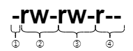
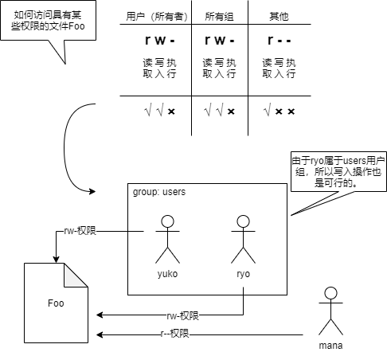
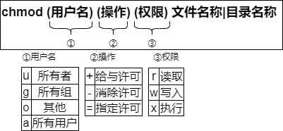
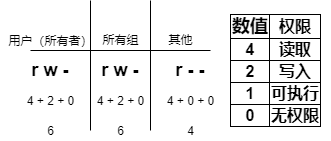

权限使用¶
管理文件所有者¶
控制对Linux文件和目录的访问。首先，检查适当的权限或当前所有者的权限。
用户和用户组¶
用户必须至少属于一个组。有两种类型的组：主组和辅助组。用户必须分配一个主组，而辅助组是可选的。
组 |
说明 |
|---|---|
主组（必须的） |
用户刚登陆时的工作组，在创建文件或目录时作为其所属的主组 |
辅助组（可选） |
如有必要，可以指定一个辅助组，可选多个 |
要查看您所属的组，请使用 groups 命令。groups 命令没有选项。如果没有指定用户名，则显示执行命令的用用户的所属组。
groups 用户名称
用户 renkeju 执行groups 命令的示例显示“所属组”的结果。
$ groups
renkeju wheel docker
在示例②中现实的所属组时root用户执行的结果。
$ groups ⬅ ①
root
$ groups renkeju ⬅ ②
renkeju : renkeju wheel docker
① 未指定用户名，因此显示您所属的组
② 由于指定 renkeju 作为用户名，因此显示 renkeju 所属的所有组。
您也可以使用 id 命令来确定您是从哪个用户登录的，以及属于哪个组。
id [选项] [用户名]
以下是 root 执行 id 命令的示例：
$ id
uid=0(root) gid=0(root) groups=0(root)
$ id renkeju
uid=1000(renkeju) gid=1000(renkeju) groups=1000(renkeju),10(wheel),995(docker)
为用户的组指定用户ID（uid）和组ID（gid）以进行标识。如上所述结果所示，如果省略了用户名，则显示当前用户的信息。如果指定了用户名，则还会显示该用户的信息。用户“renkeju”被指定uid为1000。此外，主组为“renkeju”，gid为1000。请注意，id命令也显示辅助组的信息。
权限¶
您可以分别为每个文件或目录设置“允许谁”和“执行什么操作”。这可以称为权限。可以使用 ls -l 命令检查设置的权限。
权限显示的内容分为以下几类：
① 文件类型（这表示文件类型，而不是权限本身，主要类型如下表所示）
② 对用户（所有者）的权限
③ 所有组的权限
④ 其他用户的权限
类型 |
说明 |
|---|---|
普通文件 |
|
d |
目录 |
i |
符号链接 |
此外，“rw-”表示允许执行哪些操作。在“r”,“w”,“x”这些操作类型中，标识为“-”表示此操作不被允许。
下图显示了文件“Foo”的访问权限。“-rw-rw-r–”允许用户yuko读写普通文件。由于所有组是users，因此属于users的其他用户可以读写。也就是说，用户ryo可以读写。请注意，不属于 users 组的其他用户（在本例中的mana）只能读取。
此外，“r”、“w”、“x”的含义因文件或目录而异。
类型 |
对于文件 |
对于目录 |
|---|---|---|
读取权限（r） |
more，cat和cp等命令可用于读取文件内容 |
可以执行ls命令，例如查看目录内容 |
写入权限（w） |
可用于编辑文件内容，例如vi |
可使用mkdir、touch、rm等创建和删除目录中的文件和目录 |
执行权限（x） |
可执行文件 |
可以使用cd命令切换到此目录 |
请注意，目录的执行权限。使用cd命令从其他目录中移动时，如果该目录没有执行权限，则无法移动该目录。
变更权限¶
可以使用 chmod 命令更改现有文件或目录的权限设置，只有所有者或root能更改。
chmod [选项] 模式 文件名称|目录名称
如果指定了“-R”选项，则权限将递归变更，包括子目录。在命令参数中可以指定两种模式：符号模式与八进制模式。
符号方式¶
使用字符或符号变更权限。使用以下符号或字符：
请参考下方示例：文件“mypg”的当前权限为“rw-rw-r–”。将其更改为“所有用户都可以读取和执行，只有所有者可以写入”的权限。文件的所有者为用户renkeju。
$ ls -l ⬅ 检查权限
-rw-rw-r--. 1 renkeju renkeju 0 Feb 23 23:03 mypg
$ chmod a+x,g-w mypg ⬅ 在符号模式下更改权限
-rwxr-xr-x. 1 renkeju renkeju 0 Feb 23 23:03 mypg
“a+x”表示“a”（所有用户）“+”（添加许可）具有“x”（可执行）的权限。结果为“所有用户都可以读取和执行”。此外，“g-w”表示所有者当前给予许可“w”（写入）的权限，因此不做更改，但所有组的“w”（写入）被“-”（消除许可），其最终结果是“只有所有者才能写入”。
八进制方式¶
使用八进制数字更改所需的权限。每个权限都有自己的编号。
也就是说，如果“rwx”全部被赋予权限，则为“7”，如果仅为“r”,则为“4”。在八进制模式下，通过组合此数字来指定权限。
如果将之前的符号模式的示例换成使用八进制模式操作：
$ ls -l mypg
-rw-rw-r--. 1 renkeju renkeju 0 Feb 23 23:20 mypg
$ chmod 755 mypg
$ ls -l mypg
-rwxr-xr-x. 1 renkeju renkeju 0 Feb 23 23:20 mypg
umask值¶
当用户创建新文件或目录时，会被赋予缺省权限。用户的默认权限由在shell变量中设置的umask值来确定。
使用umask命令查看当前设置的umask值。也可以通过更改umask值来更改默认使用的文件和目录权限。
umask [值]
以下结果时以用户renkeju和root的身份运行umask命令的示例。
[renkeju@workstation ~]$ umask
0002
[root@workstation ~]# umask
0022
上面的示例以四位数字格式显示。本手册介绍了可实际用作umask值的后三位数。
所创建文件的权限是由创建文件的应用程序所指定的权限与每个进程在内核中保留的umask的值进行取反之和。umask值是指不希望为应用程序指定的权限按照“用户”、“组”、“其他”的方式分配权限。通常，应用程序创建时具有权限，允许您根据所创建的文件类型执行所有从操作。因此，如果umask值为002，则创建的文件和目录的缺省权限如下表所示。此外，umask值可以从父进程传递到子进程。
文件 |
目录 |
|
|---|---|---|
创建时由应用程序指定的权限 |
666 rw-rw-rw- |
777 rwxrwxrwx |
umask值 |
002 ——-w- |
002 ——-w- |
默认权限 |
664 rw-rw-r– |
775 rwxrwxr-x |
在下面的示例中，典型用户 renkeju 创建了一个新文件和目录，并检查其权限。
$ umask
0002
$ touch fileB
$ mkdir dirB
$ ls -l
total 2
drwxrwxr-x. 2 renkeju renkeju 6 Feb 23 23:35 dirB
-rw-rw-r--. 1 renkeju renkeju 0 Feb 23 23:35 fileB
umask 命令不仅可以显示当前umask值，还可以更改当前umask值。
$ umask
0002
$ umask 026
$ umask
0026
$ touch fileC
$ ls -l fileC
-rw-r-----. 1 renkeju renkeju 0 Feb 23 23:37 fileC
在上面的示例中，更改umask值后将创建一个新文件。如果您查看fileC的权限，则会发现它是“rw-r—–”。”rw-“为“420”，八进制的“6”.“r–”为“400”，八进制得“4”。“—”为“000”，八进制得“0”。换句话说，如果将umask值更改为“026”，则新创建的文件的默认权限将从“664”更改为您所看到的“640”。
注解
umask命令中的更改仅适用于已进行更改的shell及其子进程。如果要修改其作为默认设置，则必须使用shell配置文件进行更改。
更改文件所有者和组¶
使用 chown 命令更改指定文件的所有者和组，此命令仅适用于root用户指定新的用户名作为文件或目录的所有者。
chown [选项] 用户名[.组名] 文件名称|目录名称
如果使用“-R”选项指定目录，则权限会以递归的方式变更，包括子目录。
如果不仅要更改所有者，还要更改组，请将chown命令的参数指定为“更改的所有者的名称.更改的用户组的名称”。组名必须以“.”（点）或“:”（冒号）开头。如果使用 chown 命令只更改组，请指定“chown :更改的用户组的名称 文件名称”而不必指定用户名。
以下示例中，所有者更改了文件renkeju，root更改了所有者和组。只有root才能更改所有者。
# ls -l fileA fileB
-rw-rw-r--. 1 renkeju renkeju 0 Feb 23 23:56 fileA
-rw-rw-r--. 1 renkeju renkeju 0 Feb 23 23:56 fileB
# chown ryo fileA ⬅ ①
# chown ryo.users fileB ⬅ ②
# ls -l
-rw-rw-r--. 1 ryo renkeju 0 Feb 23 23:57 fileA
-rw-rw-r--. 1 ryo users 0 Feb 23 23:57 fileB
① 将文件“fileA”的所有者从renkeju更改为ryo
② 将文件“fileB”的所有者从renkeju更改为ryo，将组从renkeju更改为users
此外，还有一个 chgrp 命令，用于仅修改用户组。与 chown 不同，即使不是 root 用户，属于该组的用户也可以执行此操作。请注意以下事项：
root 可以修改组，包括